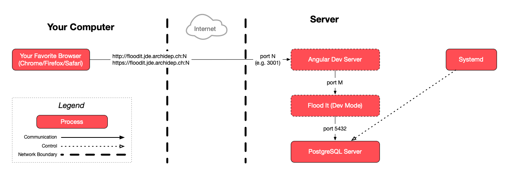
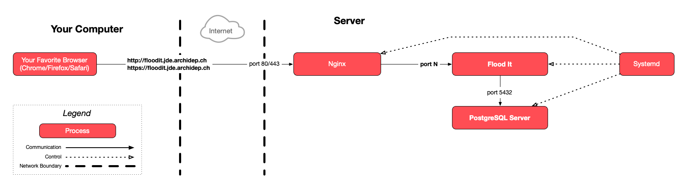

Deploy Flood It, a Spring Boot (Java) & Angular (JavaScript) application with a PostgreSQL database
The goal of this exercise is to put in practice the knowledge acquired during
previous exercises to deploy a new application from scratch on your server. The
application you must deploy is a small web game. Its code is available on
GitHub.
The backend is a Java web application that handles data access
(starting games, playing moves, etc) through a JSONAPI. It
provides no User Interface (UI).
You do not need to know the specifics of these technologies. Your goal is only
to deploy the application as indicated by the instructions. You will not need to
modify it except for a very small change at the end to test your automated
deployment.
You must deploy the provided application in a similar way as the PHP todolist in
previous exercises:
Install the language(s) and database necessary to run the application (which
are different than for the PHP todolist).
Run the application as a systemd service.
Serve the application through nginx acting as a reverse proxy.
Provision a TLS certificate for the application and configure nginx to use it.
Set up an automated deployment via Git hooks for this application.
Additionally:
The application MUST run in production mode (see its documentation).
The application MUST restart automatically if your server is rebooted
(i.e. your systemd service must be enabled).
The application MUST be accessible only through nginx. It MUST NOT
be exposed directly on a publicly accessible port. In the cloud servers used
in this course, ports 3000 and 3001 should be open for testing. DO NOT use
these ports in the final setup.
Clients accessing the application over HTTP MUST be redirected to HTTPS.
As an optional bonus challenge:
Create a dedicated Unix user (e.g. floodit) other than your personal user
(e.g. jde) to run the application.
This user must be a system user, not a login user. It must not be able to log
in with a password, although you can set up SSH public key authentication for
the automated deployment.
Clone the project’s repository with the dedicated user instead of your
personal user.
Configure systemd to run the application as the dedicated user instead of your
personal user.
Set up the automated deployment with the dedicated user instead of your
personal user.
Use the application’s local configuration file instead of environment
variables (see its documentation), and set up file/directory permissions so
that only the dedicated user has access to the configuration file (the root
user will of course have access as well).
On this pageTable of contents
Graded exercise
This exercise will be graded. Your submission will be evaluated and will
contribute to your final grade in this course.
Legend
Parts of this exercise are annotated with the following icons:
A task you MUST perform to complete the exercise
Optional step that you may perform to make sure that
everything is working correctly, or to set up additional tools that are not required but can
help you
Advanced tips on how to go further (or
challenges!)
The end of the exercise
The architecture of the software you ran or
deployed during this exercise
Troubleshooting tips: how to fix common problems you might
encounter
Getting started
The project’s README explains how to set up and run the application.
That README is generic: it is not written specifically for this course or this
exercise.
The instructions on this page explain the exercise step-by-step.
The instructions in the project’s README will be useful to you at various
points, but be careful not to blindly copy-paste and execute commands from it
without understanding what you are doing in the context of the exercise.
What the hell are Spring Boot, Angular & PostgreSQL? Flood It uses the following
buzzword salad technologies:
The backend has been developed with Spring Boot, a Java
framework that makes it easy to create stand-alone, production-grade Spring
based applications that you can “just run”.
Java is a popular programming language and development platform. It
reduces costs, shortens development timeframes, drives innovation, and
improves application services. With millions of developers running more than
60 billion Java Virtual Machines worldwide, Java continues to be the
development platform of choice for enterprises and developers.
Spring makes programming Java quicker, easier, and safer for
everybody. Spring’s focus on speed, simplicity, and productivity has made it
the world’s most popular Java framework.
The frontend has been developed with Angular, a JavaScript
application-design framework and development platform for creating efficient
and sophisticated single-page apps. It also uses Tailwind, a
utility-first CSS framework packed with classes that can be composed to build
any design, directly in your markup.
PostgreSQL is a powerful, open source object-relational database
system with over 30 years of active development that has earned it a strong
reputation for reliability, feature robustness, and performance.
Fork the repository
You must fork the application’s repository to your own GitHub
account, because this exercise requires that you make changes to the application
later, after setting up the automated deployment with Git hooks.
Warning
On your local machine, use your own repository’s SSH clone URL. This way
you will have push access to your repository.
On your Azure VM, use your own repository’s HTTPS clone URL. Since the
repository is public, you will be able to clone it without authentication. You
will not need push access on your server.
Install the requirements
Start by making sure you have installed all the requirements described in the
project’s README on your server:
How to install Java: there are several methods to install Java. Java was
originally developed by Sun Microsystems and now by Oracle,
but there are also free, open source implementations. We suggest you use
OpenJDK, one of the most popular open source implementations
originally released by Sun.
The OpenJDK publishes easy-to-install APT packages. You can list them with:
$>aptsearchopenjdk-
You should install a package named openjdk-<version>-jdk where <version>
is the Java version required by the Flood It application.
How to install Maven: you can simply install it with APT as well:
$>sudoaptinstallmaven
How to install Node.js: there are several methods to install Node.js. One
of the simplest is to use the binary distributions provided by
NodeSource. You should look for installation instructions
specific to Ubuntu, the Linux distribution used on your server. If possible,
you should find instructions for the apt package manager (using the apt or
apt-get command).
How to install PostgreSQL: you can follow the official instructions on the
Downloads page of the PostgreSQL website. You should look for
installation instructions specific to Ubuntu, the Linux distribution used on
your server.
Optional: check that everything has been correctly installed
You can check that Java has been correctly installed by displaying the
version of the java command:
It’s not a problem if you don’t have this exact version installed, as long as
you have a version compatible with the Flood It application’s requirements.
You can check that Maven has been correctly installed by displaying the
version of the mvn command:
It’s not a problem if you don’t have this exact version installed, as long as
you have a version compatible with the Flood It application’s requirements.
You can check that Node.js has been correctly installed by displaying the
version of the node command:
$>node--version
v24.11.0
Tip
It’s not a problem if you don’t have this exact version installed, as long as
you have a version compatible with the Flood It application’s requirements.
You can also check that Node.js is working correctly by running the following
command:
$>node-e'console.log(1 + 2)'
3
You can check that PostgreSQL has been correctly installed by displaying the
version of the psql command:
It’s not a problem if you don’t have this exact version installed, as long as
you have a version compatible with the Flood It application’s requirements.
You can also verify that PostgreSQL is running by showing the status of its
systemd service:
You must perform the initial setup instructions indicated in the project’s
README.
Warning
Since you will need to commit and push changes later, DO NOT use the
https://github.com/ArchiDep/floodit.git URL to clone the repository as
suggested in the README. That repository belongs to the course. Use your own
fork’s HTTPS clone URL.
Tip
When you reach the step where you need to “Configure the application”, you will
see that the Flood It application has two configuration mechanisms: environment
variables or a local configuration file. You can use either one of them. It does
not matter which you choose. Both are equally valid way of configuring the
application.
If you choose to use environment variables, you will need to provide these
environment variables through systemd later, as you have done with the PHP
todolist. The export sample commands provided in the README are only examples
and will only set the variables in the shell and SSH session where you run them.
What sorcery is this? Read this section if you want to understand what you have
done/installed so far.
The backend of the Flood It application is written in Java. You are using the
Java Virtual Machine (JVM), Java Runtime Environment (JRE) and Java Development
Kit (JDK).
When you write a program in Java, your source code is compiled to produce byte
code that can be run in a Java Virtual Machine (JVM).
This is what makes Java cross-platform: any system that has a
JVM can run Java byte code compiled on any other system. There are JVM
implementations for all major operating systems and processor architectures.
The Java Runtime Environment (JRE) is a software package that
you can install on your favorite operating system (e.g. Linux, macOS, Windows)
that provides a JVM. It contains everything you need to run already compiled
Java programs (i.e. Java byte code, often distributed in the form of JAR
files).
The Java Development Kit (JDK) is a software development kit that
includes the JRE but also everything you need to compile Java programs into Java
byte code. You will use it to compile the backend of the Flood It application.
The PostgreSQL createuser and createdb commands
The setup instructions use the createuser and createdb commands. These
commands are binaries that come with the PostgreSQL server and can be used to
manage PostgreSQL users and databases on the command line:
The createuser --interactive --pwprompt floodit command creates a
PostgreSQL user named “floodit” and asks you to define a password for that
user. The application will use this PostgreSQL username and password to
connect to the database.
The createdb --owner floodit floodit command creates an empty PostgreSQL
database named “floodit” and owned by the “floodit” user. This is the database
that the application will use.
You can see this new database by listing all available databases:
These database setup commands are equivalent to part of the todolist.sql
script
you executed when first deploying the PHP todolist.
If you prefer using SQL, you could instead connect to the database as the
postgres user (equivalent to MySQL’s root user) with sudo -u postgres psql
and run equivalent CREATE USER and CREATE DATABASE
queries.
Note that on the command line, PostgreSQL uses peer
authentication based on the
Unix username by default. This is why the commands are prefixed with sudo -u postgres to execute them as the postgres Unix user. This user was created
when you installed PostgreSQL and has administrative privileges on the entire
PostgreSQL cluster. You can verify the existence of this user with the command
cat /etc/passwd | grep postgres.
The mvn command
The setup instructions use the mvn command. Maven is a software
project management tool for the Java ecosystem, much like
Composer for PHP or npm for Node.js.
A Maven project has one or several Project Object Model (POM)
files. These pom.xml files describe a project’s dependencies and how to
build it (you can look at the Flood It application’s backend/pom.xml file as
an example).
The mvn clean install -Pskip-test command is used to:
Download all of the Flood It application’s dependencies (i.e. the Java
libraries it requires to work), like the Spring Boot web
framework. Spring Boot is a web framework written in Java much
like Laravel is a web framework written in PHP.
The dependencies are downloaded from Maven Central, the main
package registry for the Java ecosystem, and saved into the ~/.m2
directory (in your home directory).
Build the application (i.e. compile the Java source code into JVM bytecode).
Install the application into the local Maven repository.
Node.js
Node.js is an open source, cross-platform JavaScript runtime
environment. Where JavaScript could traditionally only run in a browser, Node.js
allows you to run JavaScript code on any machine, like on your Azure VM, just
like you would any other dynamic programming language like PHP, Ruby or Python.
The npm command
The setup instructions use the npm command. npm is the world’s
largest software registry for the JavaScript and Node.js
ecosystems. The npm command can be used to install and manage JavaScript
packages, much like Composer for PHP or Maven for
Java
The configuration of the Flood It application
The configuration you are instructed to perform either through environment
variables or through the backend/config/application-default.local.yml file is
equivalent to the configuration of the PHP
todolist
which you improved during the course using environment variables. It is not
uncommon for applications to provide multiple configuration mechanisms, letting
you choose which is more convenient for you.
Optional: run the automated tests
The Flood It application includes an automated test suite. Automated
tests are programs that check that the application works by
simulating input and checking output. They are not a replacement for manual
testing by humans, but programs can test mundane, repetitive tasks much faster
and much more reliably than a human can.
The project’s README explains how to set up and run the automated
tests.
Running these tests is entirely optional, but it will make sure that everything
is working properly, including that:
The application executes correctly with the Java Runtime Environment (JRE) you
have installed.
The application can successfully connect to and migrate the database.
The application behaves as specified.
Running the tests might take a minute or two, then the following output should
be displayed, indicating that all tests were successful:
Before running the application in production mode and attempting to set up the
systemd service, nginx configuration and automated deployment, you can manually
run the application in development mode to make sure it works. The project’s
README explains how to do this. You will need two terminals connected
to your server: one to run the backend, and one to run the frontend.
You can run the frontend application on port 3001 for this simple test, as
that is one of the ports that should be open in your server’s firewall. You must
also make it available to external clients. The project’s README
explains how to do this.
Once you have both backend and frontend running in your two terminals, you
should be able to visit http://W.X.Y.Z:3001 to check that the application works
(replacing W.X.Y.Z by your server’s IP address). Stop both components by
typing Ctrl-C once you are done.
This is a simplified architecture of the running processes and communication
flow when you are running the Flood It application in development mode (it is up
to you to choose and configure ports N and M):

Warning
This is NOT the final architecture of this exercise. This is a temporary
development version that you can manually launch to make sure that the Flood It
application is working correctly.
Note that at this stage, you are not yet using nginx or systemd for most
server processes.
Run the application in production mode
Follow the instructions in the project’s README to run the application
in production mode.
To run a Maven project in production, you must install it (i.e. the mvn clean install command), which will create a JAR file. This is basically a ZIP file of
the compiled Java application, which can be run by any Java Virtual Machine
(JVM). Once you have created that JAR file, you could copy it to any system that
has the Java Runtime Environment (JRE) and run it there. The Java Development
Kit (JDK) is only required to perform the compilation.
The npm run build command used in the instructions bundles the frontend’s
files in production mode, compressing and digesting them. To “digest” a web
asset is to include a hash of its contents in the file name for the purposes of
caching. This optimizes the delivery of web assets to browsers
especially when they come back to your website after having already visited
once.
You can list the frontend/dist/browser directory to see the digested assets:
ls frontend/dist/browser. Observe that a file named main-CE7IO7ZI.js (the
hash may differ) has appeared. The hash part of the file name (CE7IO7ZI in
this case) depends on the content. When the content changes, the hash changes.
This means you can instruct client browsers to cache web assets indefinitely,
since you know that an asset’s name will not change as long as its content does
not change as well and, conversely, that an asset’s name will always change if
it has been modified.
From this step until the end of the exercise, your goal is to deploy the
following architecture:

Tip
Note that unlike in development mode, you will not be using the Angular
development server in production mode. The frontend application will be built
into static files. It will be nginx’s job to serve them (and your job to
configure nginx to do so).
Create a systemd service
Create and enable a systemd unit file like in the systemd exercise. Make the necessary changes to
run the Flood It application instead of the PHP todolist.
Tip
You will find the correct command to run the application in the project’s
README. Remember that systemd requires absolute paths to commands.
You can use which <command> to determine where a command is.
Tip
You may need to set the FLOODIT_SERVER_PORT environment variable or the
server.port parameter in the local configuration file to choose the port on
which the application will listen. You can use the publicly accessible 3001 port
temporarily for testing, but you should use another free port that is not
exposed to complete the exercise, since one of the requirements is to expose the
application only through nginx.
Once you have enabled and started the service, it should start automatically the
next time you restart the server with sudo reboot.
Advanced
If you know what you are doing, you can already set up the automated deployment
project structure at this point, so that you can point your systemd
configuration to the correct directory. That way you will not have to modify it
later.
Serve the application through nginx
Create an nginx proxy configuration to serve the application like in the nginx
PHP-FPM exercise.
The root directive in your nginx configuration should point to
the directory that contains the static web assets of the application’s compiled
frontend (this is documented in the README).
Tip
Use an absolute path for the root directive. Do not follow steps related to
PHP-FPM, since they are only valid for a PHP application.
The include and fastcgi_pass directives used in the PHP-FPM exercise make no
sense for a non-PHP application. You should replace them with a proxy_pass
directive,
as presented during the course.
Similarly to the multi-component exercise, you will need to define multiple
locations because the application is in two parts:
A frontend with compiled static files. There is no port here; there are simply
files to serve like in the static deployment exercise. For this location, you
might want to use the try_files directive:
try_files $uri $uri/ /index.html =404;
A backend which listens on a port (that you configured) and responds to
requests under the /api path. This location is where you want to use
proxy_pass.
Advanced
You can also point the nginx configuration directly to the automated deployment
structure. That way you will not have to modify it later.
Provision a TLS certificate
Obtain and configure a TLS certificate to serve the application over HTTPS like
in the certbot exercise.
Set up an automated deployment with Git hooks
Change your deployment so that the application can be automatically updated via
a Git hook like in the automated deployment exercise.
Once you have set up the new directories, make sure to update your systemd unit
file and nginx configuration file to point to the correct directories.
Because the new directory is a fresh deployment, you may have to repeat part of
the initial setup you performed in the original directory. The
PostgreSQL user, database and extension have already been created, and your hook
will handle most of the rest of the setup. But if you used the
backend/config/application-default.local.yml configuration file, you must copy
it to the new deployment directory as well. You can use the cp <source> <target> command for this.
Complete the post-receive hook. Compared to the PHP todolist, there are
additional steps which must be performed in the script for the automated
deployment to work correctly:
Frontend dependencies must be updated in case there are new or upgraded ones.
The PHP todolist had no dependencies so you did not need to do this.
More information
The backend dependencies of the Flood It application must also be updated, but
Maven will do this for you automatically.
The Angular frontend must be rebuilt in case changes were made to the
frontend source files.
The backend application must be rebuilt in case changes were made to the
source files.
The systemd service must be restarted with systemctl.
More information
Unlike PHP, code in most other languages is not reinterpreted on-the-fly; the
service must be restarted so that the program is reloaded into memory as a new
process).
The project’s README explains how to do all of this except restarting
the systemd service, which you can easily do with sudo systemctl restart <service>. You should run the appropriate commands in your post-receive hook
script.
Allowing your user to restart the service without a password
In order for the new post-receive hook to work, your user must be able to run
sudo systemctl restart floodit (assuming you have named your service
floodit) without entering a password, otherwise it will not work in a Git
hook.
More information
This is because a Git hook is not an interactive program. You are not running it
yourself, so you are not available to enter your password where prompted.
If you are using the administrator user account that came with your Azure VM to
run the application, it already has the right to use sudo without a password.
More information
This has been automatically configured for you in the
/etc/sudoers.d/90-cloud-init-users file.
Allowing the dedicated floodit Unix user to control the systemd service
If you are trying to complete the bonus challenge, you will need to allow the
floodit user run the necessary sudo systemctl ... commands without a
password as well.
Make sure your default editor is nano (or whichever you are more comfortable
with):
$>sudoupdate-alternatives--configeditor
When you created the floodit Unix user, your server created a corresponding
Unix group with the same name by default. Now you will add a file in the
/etc/sudoers.d directory to allow users in the floodit Unix group to run
some specific commands without a password.
$>sudovisudo-f/etc/sudoers.d/floodit
More information
The visudo command allows you to edit the sudoers file in a safe
fashion. It will refuse to save a sudoers file with a syntax error (which could
potentially corrupt your system or lock you out of your administrative
privileges).
This line allows any user in the floodit group to execute the listed commands
with sudo without having to enter a password (hence the NOPASSWD option).
Exit with Ctrl-X if you are using nano or with Esc then :wq if you are using
Vim.
Tip
If you are using nano, the file name you are asked to confirm will be
/etc/sudoers.d/floodit.tmp instead of /etc/sudoers.d/floodit. This is
normal, because visudo uses a temporary file to validate your changes before
saving the actual file. You may confirm without changes.
You can test that it works by first switching to the floodit user with sudo su - floodit and then running sudo systemctl status floodit. It should run
the command without asking you for any password (only for the specific commands
listed in the file your created).
Test the automated deployment
Clone your fork of the repository to your local machine, make sure you have
added a remote pointing to your server, then commit and push a change to test
the automated deployment.
Here’s some visible changes you could easily make:
Send an email to Simon Oulevay & Simon Pinkas with the URL to your deployed
application (e.g. https://floodit.jde.archidep.ch), no later than December 10th
2025 at 13:15:00.000.
What have I done?
You have deployed a new backend/frontend web application to your server from
scratch, using the knowledge you acquired during previous deployment exercises.
Architecture
This is a simplified architecture of the main running processes and
communication flow at the end of this exercise:
Troubleshooting
Here’s a few tips about some problems you may encounter during this exercise.
Note that some of these errors can happen in various situations:
When running a command manually from your terminal.
When systemd tries to start your service.
When your post-receive Git hook executes.
I see warnings when running Maven
If you see these warnings every time you run a mvn command:
WARNING: A terminally deprecated method in sun.misc.Unsafe has been called
WARNING: sun.misc.Unsafe::objectFieldOffset has been called by com.google.common.util.concurrent.AbstractFuture$UnsafeAtomicHelper (file:/usr/share/maven/lib/guava.jar)
WARNING: Please consider reporting this to the maintainers of class com.google.common.util.concurrent.AbstractFuture$UnsafeAtomicHelper
WARNING: sun.misc.Unsafe::objectFieldOffset will be removed in a future release
You can ignore them. This is due to an incompatibility between some internal
libraries used by the Flood It application. You don’t have to worry about it and
it will not prevent the application from working.
Daemons using outdated libraries
When you install a package with APT (e.g. MySQL), it may prompt you to
reboot and/or to restart outdated daemons (i.e. background services):
Simply select “Ok” by pressing the Tab key, then press Enter to confirm.
This happens because most recent Linux versions have unattended
upgrades: a tool that automatically installs daily
security upgrades on your server without human intervention. Sometimes, some of
the background services running on your server may need to be restarted for
these upgrades to be applied.
Since you are installing a new background service (the MySQL server) which must
be started, APT asks whether you want to apply upgrades to other background
services by restarting them. Rebooting your server would also have the effect of
restarting these services and applying the security upgrades.
No plugin found for prefix ‘spring-boot’ in the current project
If you get an error similar to this when running the mvn command:
$> mvn spring-boot:run
[INFO] Scanning for projects...
Downloading from central: https://repo.maven.apache.org/maven2/org/codehaus/mojo/maven-metadata.xml
Downloading from central: https://repo.maven.apache.org/maven2/org/apache/maven/plugins/maven-metadata.xml
Downloaded from central: https://repo.maven.apache.org/maven2/org/apache/maven/plugins/maven-metadata.xml (14 kB at 26 kB/s)
Downloaded from central: https://repo.maven.apache.org/maven2/org/codehaus/mojo/maven-metadata.xml (21 kB at 36 kB/s)
[ERROR] No plugin found for prefix 'spring-boot' in the current project and in the plugin groups [org.apache.maven.plugins, org.codehaus.mojo] available from the repositories [local (/home/jde/.m2/repository), central (https://repo.maven.apache.org/maven2)] -> [Help 1]
[ERROR]
[ERROR] To see the full stack trace of the errors, re-run Maven with the -e switch.
[ERROR] Re-run Maven using the -X switch to enable full debug logging.
[ERROR]
[ERROR] For more information about the errors and possible solutions, please read the following articles:
It means that you are running the command in the wrong directory. Maven requires
a pom.xml file to know what to do. You must be sure to run the mvn command
in a directory that contains this pom.xml file, i.e. in the repository of the
Flood It application that you cloned.
FATAL: password authentication failed for user “floodit”
If you see an error similar to this when starting the application or running the
automated tests:
SQL State : 28P01
Error Code : 0
Message : FATAL: password authentication failed for user "floodit"
at org.flywaydb.core.internal.jdbc.JdbcUtils.openConnection(JdbcUtils.java:60) ~[flyway-core-8.5.13.jar:na]
at org.flywaydb.core.internal.jdbc.JdbcConnectionFactory.<init>(JdbcConnectionFactory.java:75) ~[flyway-core-8.5.13.jar:na]
at org.flywaydb.core.FlywayExecutor.execute(FlywayExecutor.java:147) ~[flyway-core-8.5.13.jar:na]
at org.flywaydb.core.Flyway.migrate(Flyway.java:124) ~[flyway-core-8.5.13.jar:na]
at org.springframework.boot.autoconfigure.flyway.FlywayMigrationInitializer.afterPropertiesSet(FlywayMigrationInitializer.java:66) ~[spring-boot-autoconfigure-2.7.4.jar:2.7.4]
at org.springframework.beans.factory.support.AbstractAutowireCapableBeanFactory.invokeInitMethods(AbstractAutowireCapableBeanFactory.java:1863) ~[spring-beans-5.3.23.jar:5.3.23]
at org.springframework.beans.factory.support.AbstractAutowireCapableBeanFactory.initializeBean(AbstractAutowireCapableBeanFactory.java:1800) ~[spring-beans-5.3.23.jar:5.3.23]
... 18 common frames omitted
Caused by: org.postgresql.util.PSQLException: FATAL: password authentication failed for user "floodit"
at org.postgresql.core.v3.ConnectionFactoryImpl.doAuthentication(ConnectionFactoryImpl.java:646) ~[postgresql-42.3.7.jar:42.3.7]
at org.postgresql.core.v3.ConnectionFactoryImpl.tryConnect(ConnectionFactoryImpl.java:180) ~[postgresql-42.3.7.jar:42.3.7]
at org.postgresql.core.v3.ConnectionFactoryImpl.openConnectionImpl(ConnectionFactoryImpl.java:235) ~[postgresql-42.3.7.jar:42.3.7]
at org.postgresql.core.ConnectionFactory.openConnection(ConnectionFactory.java:49) ~[postgresql-42.3.7.jar:42.3.7]
at org.postgresql.jdbc.PgConnection.<init>(PgConnection.java:223) ~[postgresql-42.3.7.jar:42.3.7]
at org.postgresql.Driver.makeConnection(Driver.java:402) ~[postgresql-42.3.7.jar:42.3.7]
at org.postgresql.Driver.connect(Driver.java:261) ~[postgresql-42.3.7.jar:42.3.7]
at com.zaxxer.hikari.util.DriverDataSource.getConnection(DriverDataSource.java:138) ~[HikariCP-4.0.3.jar:na]
at com.zaxxer.hikari.pool.PoolBase.newConnection(PoolBase.java:364) ~[HikariCP-4.0.3.jar:na]
at com.zaxxer.hikari.pool.PoolBase.newPoolEntry(PoolBase.java:206) ~[HikariCP-4.0.3.jar:na]
at com.zaxxer.hikari.pool.HikariPool.createPoolEntry(HikariPool.java:476) ~[HikariCP-4.0.3.jar:na]
at com.zaxxer.hikari.pool.HikariPool.checkFailFast(HikariPool.java:561) ~[HikariCP-4.0.3.jar:na]
at com.zaxxer.hikari.pool.HikariPool.<init>(HikariPool.java:115) ~[HikariCP-4.0.3.jar:na]
at com.zaxxer.hikari.HikariDataSource.getConnection(HikariDataSource.java:112) ~[HikariCP-4.0.3.jar:na]
at org.flywaydb.core.internal.jdbc.JdbcUtils.openConnection(JdbcUtils.java:48) ~[flyway-core-8.5.13.jar:na]
... 24 common frames omitted
It means that the Flood It application or its automated tests cannot connect to
the database:
Are you sure that you followed all the setup instructions and performed all
necessary configuration?
Did you properly create the floodit PostgreSQL user and database?
If you are attempting to run the application in development mode, did you
properly configure the database connection with the $FLOODIT_DATABASE_*
environment variable or via the backend/config/application-default.local.yml
file?
If you are attempting to run the automated tests, did you properly configure
the database connection with the $FLOODIT_TEST_DATABASE_* environment
variable or via the backend/config/application-test.local.yml file?
Are you using the correct password?
Note
Just like the PHP todolist required the correct configuration to successfully
connect to its MySQL database, the Flood It application also requires the
correct configuration to connect to its PostgreSQL database.
Web server failed to start. Port 3000 was already in use.
If you see an error similar to this when running the application:
***************************
APPLICATION FAILED TO START
***************************
Description:
Web server failed to start. Port 3000 was already in use.
Action:
Identify and stop the process that's listening on port 3000 or configure this application to listen on another port.
It means that there is already an application or other process listening on the
port the Flood It backend is trying to listen on (port 3000 by default). You
should use the $FLOODIT_SERVER_PORT environment variable or the server.port
parameter in the local configuration file to change the port, for example if you
are trying to run the application in development mode:
$>FLOODIT_SERVER_PORT=3001mvnspring-boot:run
remote: sudo: no tty present and no askpass program specified
If you see an error message similar to this when your Git hook is triggered:
remote: sudo: no tty present and no askpass program specified
Make sure that the list of authorized systemctl commands in the sudoers file
match the name of your service (if you named your systemd configuration file
something other than floodit.service, you must adapt the commands in the
/etc/sudoers.d/floodit file to use the correct service name).
This error occurs because ordinarily, a Unix user does not have the right to
execute sudo systemctl restart floodit without entering their password to gain
administrative rights. A Git hook is executed in a non-interactive context: it
can only print information, and you cannot interact with it (e.g. give it input)
while it is running. This means that it cannot ask for your password, so any
sudo command will fail by default.
This is what the error message indicates: no tty present means that there is
no interactive terminal (tty comes from the terminology of the 1970s: it means
a teletypewriter, which was one of the first terminals).
The linked instructions above grant the user the right to execute specific
sudo commands (like sudo systemctl restart floodit) without having to enter
your password. Once that is done, these commands will work from the Git hook as
well.
code=exited, status=200/CHDIR
If you see an error message similar to this in your systemd service’s status:
code=exited, status=200/CHDIR
It means that systemd failed to move into the directory you specified (CHDIR
means change directory). Check your systemd unit file to make sure that
the working directory you have configured is the correct one and really exists.
502 Bad Gateway
If you get a 502 Bad Gateway error in your browser when trying to
access an nginx site you have configured, it means that you have reached nginx,
but that nginx could not reach the proxy address you have configured. The proxy
address is defined with the proxy_pass directive in that
site’s configuration file.
Are you sure that your nginx configuration, namely the proxy address, is
correct? Check to make sure you are using the correct address and port. Is your
application actually listening on that port?
I forgot to fork the Flood It repository and I have already cloned it
You may have cloned the exercise’s repository directly:
Then you won’t have push access because this repository does not belong to you.
Fork the repository, then change your clone’s remote URL by running this
command in your clone’s directory on the server (replacing MyGitHubUser with
your GitHub username):
I don’t remember the password I used for the floodit PostgreSQL user
You can change it with the following command:
$>sudo-upostgrespsql-c'\password floodit'
System debugging
You can display the last few lines of the logs of your floodit systemd
service with the following command:
$>sudosystemctlstatusfloodit
If you need more details, you can display the full logs with the following
command:
$>sudojournalctl-ufloodit
Tip
You can scroll in journalctl logs using the up/down arrow keys, jump directly
to the bottom with Shift-G (uppercase G), or back to the top with G
(lowercase g). Exit with Q or Ctrl-C.
If the application does not seem to work after running the systemd service,
there might be an error message in these logs that can help you identify the
issue.
PostgreSQL debugging
You can list available databases with the following command:
$>sudo-upostgrespsql-l
You can connect to a database with the following command:
$>sudo-upostgresqlpsql<database-name>
floodit=#
Note that the prompt has changed, because you are now connected to the
interactive PostgreSQL console. You can obtain help by typing the \? command
(q to exit the help page), or type SQL queries. For example, here’s how to
list the tables in the current database and count the number of rows in the
games table:
Run the exit command when you are done to exit the PostgreSQL console.
Updating your fork of the repository
If changes (e.g. bugfixes) are made to the original repository after you have
started the exercise, these changes will not automatically be included into your
fork of the repository. You can follow this procedure to update it.
On your local machine:
# Clone your fork of the Flood It repository on your local machine (replace
It means that you are running into a rate limit of the Let’s Encrypt
service: at most 50 certificates can
be requested per domain per week. With more than 50 students in both classes of
the architecture & deployment course, we may encounter this limit now and then.
Please notify the teachers immediately if you run into this issue.


{kind=link}
{kind=link}